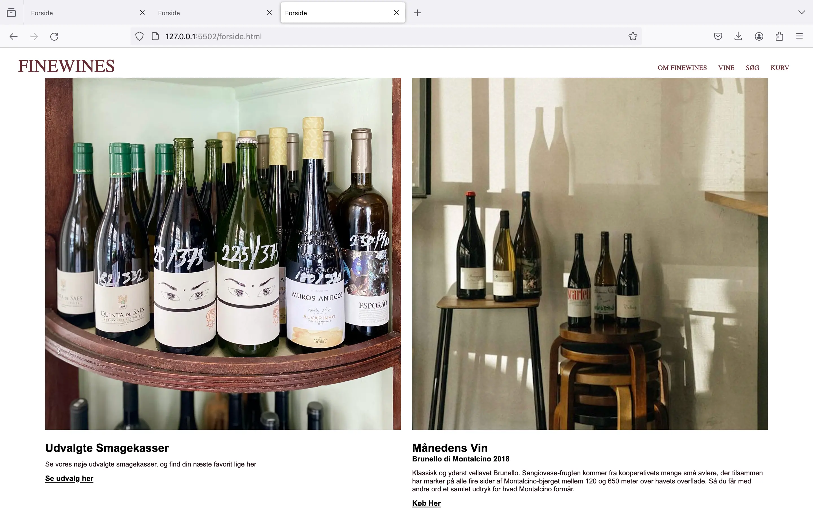
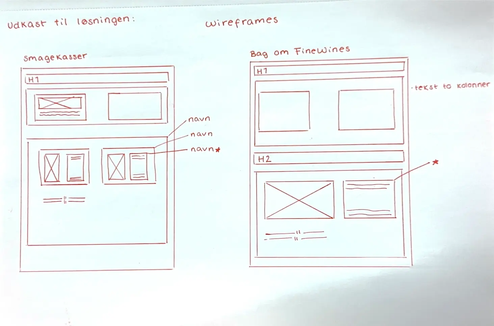
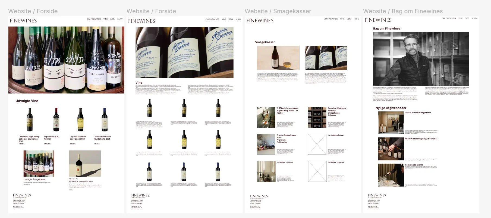

DIGITAL PORTFOLIO
Grundlæggende UX & UI
User Experience Design (UX) er en essentiel del af udviklingen af digitale brugergrænseflader (UI). I dette forløb blev vi introduceret til samspillet mellem brugere og brugergrænseflader samt de teorier, værktøjer og metoder, der bruges til research, design og test i digital produktudvikling. Dette gav mig forståelse for, hvordan designvalg og produktudvikling baseres på konkrete brugerindsigter. Jeg har fået erfaring med udvalgte UX/UI-metoder og lært at præsentere min design- og udviklingsproces samt formidle mine research- og testresultater.
Emnesite
Opgaven "emnesite" blev til et kodet website om et selvvalgt emne, der interesserede os. Her skulle vi anvende tværfaglige principper for planlægning, design og udvikling af den digitale brugergrænseflade. Vi udførte selv research og begyndte designprocessen, hvor vi lærte om research, moodboards og styletiles.
Vi brugte blandt andet Figma til at udarbejde og visualisere moodboard, styletile og andet research og designproces. Herefter skabte jeg en digital prototype, der gav mig mulighed for at finpudse projektet, inden det skulle kodes.
 